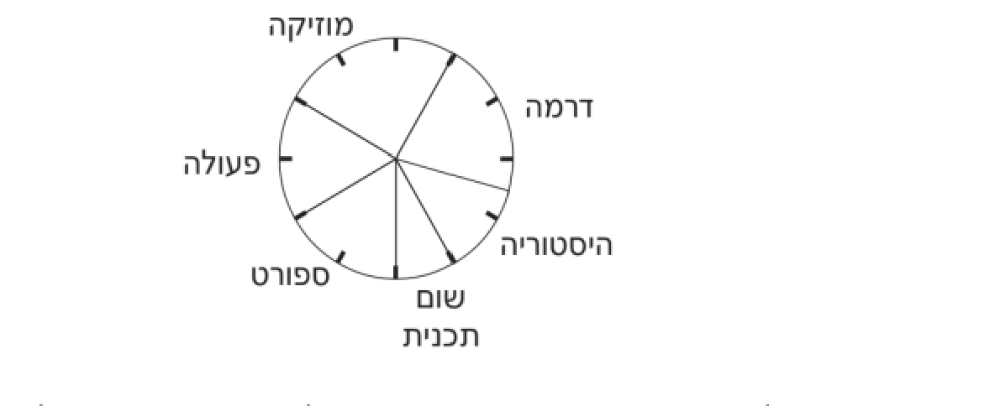

תחום אי־וודאות
7
7
הדיאגרמה מציגה את סוג תכנית הטלוויזיה המועדפת על 240 תלמידים.

תכניות טלוויזיה מועדפות על תלמידים
מהו מספר התלמידים שבחרו ב"היסטוריה"?
א.20
ב.30
ג.40
ד.60
8
תלמידי שכבת ז' בבית הספר "אופק" החליטו להוביל מיזם ירוק לאיסוף בקבוקי פלסטיק למחזור. בכל יום במהלך שבוע המבצע ספרו "נאמני הסביבה" את כמות הבקבוקים שנאספו במיכל המרכזי. להלן הנתונים שנאספו:
| חמישי | רביעי | שלישי | שני | ראשון | יום |
|---|---|---|---|---|---|
| 50 | 75 | 30 | 60 | 45 | מספר בקבוקים |
- 1.ארגנו את הנתונים בטבלת שכיחויות מסודרת.
- 2.בנו דיאגרמת עמודות (מקלות) המתארת את כמות הבקבוקים שנאספו בכל יום.
- 3.לדעתכם, מה מייצג טוב יותר את הנתונים?טבלהדיאגרמת עמודות